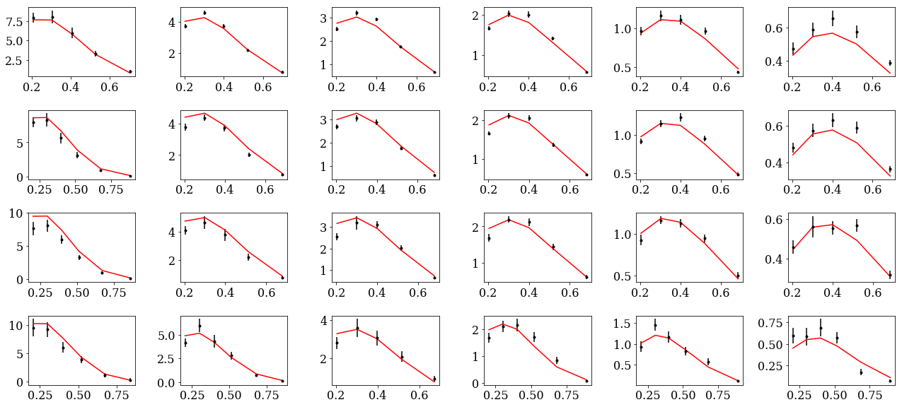

example00: unpolarized TMDs¶
In this example we will extract TMD PDFs and FFs using HERMES SIDIS unpolarized multiplicities.
Input file¶
Lets examine the input.py provided at
extraction/examples00/input.py
At the top we have
conf={}
This dictionary serves as a common block in the sense of fortran programming with the difference that we will be able to add not just numbers but also class objects
We next specify the number of CPU (logical-cores) to be used
conf['ncpu']=2
The next part is only relevant for MC runs (we will use this later)
conf['nruns']=1
conf['factor']=4.0
conf['kappa']=1.5
conf['tol']=1e-10
conf['itmax']=int(1e7)
conf['block size']=10
conf['nll shift']=0
We proceed to specify the parameters to be fitted
conf['params']={}
conf['params']['pdf']={}
conf['params']['pdf']['widths1 uv'] ={'value': 3.90812e-01,'min':0,'max':1,'fixed':False}
conf['params']['pdf']['widths1 dv'] ={'value': 3.90812e-01,'min':0,'max':1,'fixed':'widths1 uv'}
conf['params']['pdf']['widths1 sea'] ={'value': 8.14534e-01,'min':0,'max':1,'fixed':False}
conf['params']['pdf']['widths2 uv'] ={'value': 1.72798e-01,'min':0,'max':1,'fixed':False}
conf['params']['pdf']['widths2 dv'] ={'value': 3.90812e-01,'min':0,'max':1,'fixed':'widths1 uv'}
conf['params']['pdf']['widths2 sea'] ={'value': -3.44763e-01,'min':0,'max':1,'fixed':False}
conf['params']['ff']={}
conf['params']['ff']['widths1 pi+ fav'] ={'value': 1.50893e-01,'min':0,'max':1,'fixed':False}
conf['params']['ff']['widths1 pi+ unfav'] ={'value': 1.22787e-01,'min':0,'max':1,'fixed':False}
conf['params']['ff']['widths2 pi+ fav'] ={'value': -3.99747e-02,'min':0,'max':1,'fixed':False}
conf['params']['ff']['widths2 pi+ unfav'] ={'value': 1.42020e-02,'min':0,'max':1,'fixed':False}
conf['params']['ff']['widths1 k+ fav'] ={'value': 1.34063e-01,'min':0,'max':1,'fixed':True}
conf['params']['ff']['widths1 k+ unfav'] ={'value': 1.87915e-01,'min':0,'max':1,'fixed':True}
conf['params']['ff']['widths2 k+ fav'] ={'value': 0.00000e+00,'min':0,'max':1,'fixed':True}
conf['params']['ff']['widths2 k+ unfav'] ={'value': 0.00000e+00,'min':0,'max':1,'fixed':True}
The data strucure for the parameters is
conf['params'][<<TMD function>>][<<parameter name>>]={'value':float,'min':float,'max':float,'fixed':bool/string}
Here value set the numerical value for the parameter. min, max specifies the allowed
range for the parameter and fixed controls whether or not the parameter should be fixed using
False,True. Alternatively the parameter can be set equal to another parameter using the string
name <<parameter name>>.
Finally we setup the data sets to be include in the analysis
conf['datasets']={}
conf['datasets']['sidis']={}
conf['datasets']['sidis']['xlsx']={}
conf['datasets']['sidis']['xlsx'][1000]='sidis/expdata/1000.xlsx' # | proton | pi+ | M_Hermes | hermes
conf['datasets']['sidis']['xlsx'][1001]='sidis/expdata/1001.xlsx' # | proton | pi- | M_Hermes | hermes
conf['datasets']['sidis']['xlsx'][1004]='sidis/expdata/1004.xlsx' # | deuteron | pi+ | M_Hermes | hermes
conf['datasets']['sidis']['xlsx'][1005]='sidis/expdata/1005.xlsx' # | deuteron | pi- | M_Hermes | hermes
conf['datasets']['sidis']['xlsx'][1002]='sidis/expdata/1002.xlsx' # | proton | k+ | M_Hermes | hermes
conf['datasets']['sidis']['xlsx'][1003]='sidis/expdata/1003.xlsx' # | proton | k- | M_Hermes | hermes
conf['datasets']['sidis']['xlsx'][1006]='sidis/expdata/1006.xlsx' # | deuteron | k+ | M_Hermes | hermes
conf['datasets']['sidis']['xlsx'][1007]='sidis/expdata/1007.xlsx' # | deuteron | k- | M_Hermes | hermes
conf['datasets']['sidis']['norm']={}
for idx in conf['datasets']['sidis']['xlsx']: conf['datasets']['sidis']['norm'][idx]={'value':1,'fixed':True,'min':0,'max':1}
conf['datasets']['sidis']['filters']={}
for idx in conf['datasets']['sidis']['xlsx']: conf['datasets']['sidis']['filters'][idx]="z<0.6 and Q2>1.69 and pT>0.2 and pT<0.9"
The directory jam3d/database contains a collection of datasets sorted by observables e.g SIDIS. In the
example above we are specifing the SIDIS datasets. The data sets are stored as <<idx>>.xlsx where
<<idx>> is a unique integer identifier within the observable.
Some experimental data sets comes with an overall normalization uncertaninty. Such normalization is
considered to be a nuisance parameter to be constrained in the analysis and can be set to be a free
parameter at conf['datasets']['sidis']['norm'].
Finally filters can be applied at conf['datasets']['sidis']['filters'] as shown above.
Single fit¶
We next proceed to perform a single fit
jam3d -t 1 input.py
-t=1 uses a minimizer that respects the boundaries while -t=2 uses a minimizer that
does not respect the boundaries. There are pros/cons but this is mostly case by case dependent. We
suggest to try both. The program upon completion should print results as follow:
JAM FITTER | pdf widths1 sea 8.14534e-01
count = 13 | pdf widths1 uv 3.90812e-01
elapsed time(mins)=0.060276 | pdf widths2 sea -3.44763e-01
shifts = 8 | pdf widths2 uv 1.72798e-01
npts = 978 | ff widths1 pi+ fav 1.50893e-01
chi2 = 1169.042354 | ff widths1 pi+ unfav 1.22787e-01
rchi2 = 0.000000 | ff widths2 pi+ fav -3.99747e-02
nchi2 = 0.000000 | ff widths2 pi+ unfav 1.42020e-02
chi2tot = 1169.042354 |
dchi2(iter) = 0.000001 |
dchi2(local) = -0.000001 |
|
reaction: sidis |
idx tar had col obs npts chi2 rchi2 nchi2 |
1000 proton pi+ hermes M_Hermes 127 325.10 0.00 0.00 |
1001 proton pi- hermes M_Hermes 124 163.97 0.00 0.00 |
1002 proton k+ hermes M_Hermes 122 72.73 0.00 0.00 |
1003 proton k- hermes M_Hermes 115 42.49 0.00 0.00 |
1004 deuteron pi+ hermes M_Hermes 124 159.11 0.00 0.00 |
1005 deuteron pi- hermes M_Hermes 122 158.07 0.00 0.00 |
1006 deuteron k+ hermes M_Hermes 122 78.11 0.00 0.00 |
1007 deuteron k- hermes M_Hermes 122 169.47 0.00 0.00 |
The results are automatically written in the input.py. We can check consistency between the screen output and the input.py
At this point one can study the results to make plots etc. An example jupyter notebook is shown below. The first block lists the various external
tools used to analyze the output.
import sys,os
from fitlab.resman import RESMAN
from fitlab.mcsamp import MCSAMP
from tools.config import load_config,conf
from tools.tools import load, save,checkdir
from tools.mcstat import chi2hist, parhist
from tools.mcproc import impose_cdf_cut
import pylab as py
import numpy as np
import pandas as pd
import matplotlib.pyplot as plt
from matplotlib import rc
from matplotlib.colors import LogNorm
import copy
def lprint(msg):
sys.stdout.write('\r')
sys.stdout.write('%s' %msg)
sys.stdout.flush()
%matplotlib inline
The next block loads the data files based on the given input file (input.py). As the files are loaded, the notebook
writes out which file has been loaded and how many total data points are being considered.
load_config('./input.py')
conf['resman'] = RESMAN(mode='solo',ip=None,nworkers=5)
res=conf['resman'].get_residuals(conf['parman'].par)
npts=len(res[0])
print '\nnumber of data points = ',npts
The next two sections read through the files and organize the data into tables, printing the column labels and a summary of which collaborations, observables, and the number of points considered.
ALL=pd.concat([pd.DataFrame(conf['resman'].sidisres.tabs[idx]) \
for idx in conf['resman'].sidisres.tabs.keys()])
ALL.columns
data = {}
collaborations = np.unique(ALL.col)
for collab in collaborations:
data[collab] = {}
data_subset = ALL[ALL.col == collab]
observables = np.unique(data_subset.obs)
for observable in observables:
data[collab][observable] = data_subset[data_subset.obs == observable]
print('Collaboration: %s, Observerable: %s, Points: %d' % (collab, observable, len(data[collab][observable])))
Once the data has been organized, it can be plotted using the following code. This code will take any one of the data files
from the ones considered, and if the observed hadron is positive, plots the curve red, and plots the curve blue if the hadron is negative.
Because different collaborations have binned x and z differently, specific functions must be defined to consider the correct
regions. These plots show the observable M vs the transverse momentum pT.
data = {}
for key, value in conf['resman'].sidisres.tabs.iteritems():
data[key] = pd.DataFrame(value)
plt.rc('font', family='serif')
plt.rc('font', size=16)
ALL=pd.concat([pd.DataFrame(conf['resman'].sidisres.tabs[idx]) \
for idx in conf['resman'].sidisres.tabs.keys()])
ALL.columns
def plotHERMES(dat,label1='dataset 1'):
if (dat % 2 == 0):
col = 'red'
if (dat % 2 == 1):
col = 'blue'
data1=data[dat]
data1['xr']=[np.round(x,2) for x in data1.x]
ZR=[[0.1,0.2],[0.2,0.25],[0.25,0.3],[0.3,0.4],[0.4,0.5],[0.5,1]]
nrows,ncols=6,6
fig = py.figure(figsize=(ncols*3,nrows*2))
cnt=0
for xr in np.unique(data1['xr']):
tabx=data1.query('xr==%f'%xr)
for zr in ZR:
tabz=tabx.query('z>%f and z<%f'%(zr[0],zr[1]))
cnt+=1
ax=py.subplot(nrows,ncols,cnt)
ax.errorbar(tabz['pT'],tabz['value'],yerr=tabz['alpha'],fmt='k.', label=label1, color = col)
ax.plot(tabz['pT'], tabz['thy'], linestyle='-', color=col)
py.tight_layout()
After the plot function has been defined, the function can be called. For example, the data from the HERMES collaboration for a proton target and an observed pi+ can be plotted by calling the function for the 1000 data file.
plotHERMES(1000, 'M')
This will produce the following plots.
For further examples of plotting for different experimental kinematics, see the workbook for MC sampling below. We note that the uncertainties inferred from a single fit is not supported in JAM3D (i.e. Hessian error propagation). Instead, the uncertainties will be inferred by performing a likelihood analysis using MC sampling.
MC sampling¶
Samples generation¶
The MC sampling is performed via a technique known as Nested Sampling (NS).
The setups for NS are in code-block of input.py
conf['nruns']=1
conf['factor']=4.0
conf['kappa']=1.5
conf['tol']=1e-10
conf['itmax']=int(1e7)
conf['block size']=10
conf['nll shift']=0
conf['factor'] and conf['kappa'] are the most relevant parameters in NS.
conf['factor'] controls the number of active points in NS:
The sampling is more dense with increasing values of factor
With the MC setup, the sampling can be started using
jam3d -t 3 input.py
optionally one can add the flag -p to parallelize the likelihood evaluation.
Analysis¶
The example00 comes with a jupyter notebook to guide the analysis. The relevant code lines are shown below.
import sys,os
from fitlab.resman import RESMAN
from fitlab.mcsamp import MCSAMP
from tools.config import load_config,conf
from tools.tools import load, save,checkdir
from tools.mcstat import chi2hist, parhist
from tools.mcproc import impose_cdf_cut
import pylab as py
import numpy as np
import pandas as pd
import copy
def lprint(msg):
sys.stdout.write('\r')
sys.stdout.write('%s' %msg)
sys.stdout.flush()
%matplotlib inline
runs=load('./summary.mcp')
load_config('./input.py')
checkdir('results')
conf['resman'] = RESMAN(mode='solo',ip=None,nworkers=5)
res=conf['resman'].get_residuals(conf['parman'].par)
npts=len(res[0])
print '\nnumber of data points = ',npts
loading sidis data sets 1007
number of data points = 978
Chi2 profile for each run¶
nrows,ncols=1,1
fig = py.figure(figsize=(ncols*5,nrows*3))
ax=py.subplot(nrows,ncols,1)
R=(0,600)
for k in runs:
if k=='all': continue
ax.hist(2*runs[k]['nll']-npts,bins=50,range=R,histtype='step',label=str(k))
ax.legend()
ax.set_xlabel('chi2-npts')
py.tight_layout()
distribution of parameters¶
class parhist:
def __init__(self,runs,inputmod=None):
self.inputmod=inputmod
self.order=self.get_ordered_free_params()
self.tabs,self.tabs_a=self.get_tabs(runs)
self.kind1=[]
self.kind2=[]
for _ in conf['params']: self.kind1.append(_)
for _ in conf['datasets']: self.kind2.append(_)
def get_ordered_free_params(self):
order=[]
for k in conf['params']:
for kk in conf['params'][k]:
if conf['params'][k][kk]['fixed']==False:
order.append([1,k,kk])
if 'datasets' in conf:
for k in conf['datasets']:
for kk in conf['datasets'][k]['norm']:
if conf['datasets'][k]['norm'][kk]['fixed']==False:
order.append([2,k,kk])
return order
def get_tabs(self,runs):
"""
create pandas data frame for the samples
"""
tabs={}
tabs_a={}
for k in runs:
tab,tab_a={},{}
tab['nll']=runs[k]['nll']
tab['weights']=runs[k]['weights']
samples=np.transpose(runs[k]['samples'])
active_p=np.transpose(runs[k]['active p'])
for i in range(len(self.order)):
_,kind,par=self.order[i]
tab['%s:%s'%(kind,str(par))]=samples[i]
tab_a['%s:%s'%(kind,str(par))]=active_p[i]
tabs[k]=pd.DataFrame(tab)
tabs_a[k]=pd.DataFrame(tab_a)
return tabs,tabs_a
def plot(self,tabs,tabs_a,entries,kind1,kind2,iRange=0):
for i in range(len(entries)):
self.cnt+=1
if entries[i]==None: continue
ax=py.subplot(self.nrows,self.ncols,self.cnt)
kind,par=entries[i].split(':')
for _ in kind1:
if kind==_:
vmin=conf['params'][_][par]['min']
vmax=conf['params'][_][par]['max']
R=(vmin,vmax)
E0=conf['params'][_][par]['value']
for _ in kind2:
if kind==_:
vmin=conf['datasets'][_]['norm'][int(par)]['min']
vmax=conf['datasets'][_]['norm'][int(par)]['max']
R=(vmin,vmax)
E0=conf['datasets'][_]['norm'][int(par)]['value']
if iRange==0:pass
else: R=None
for _ in tabs:
if _=='all': continue
tab=tabs[_]
ax.hist(tab[entries[i]],range=R,bins=50,weights=tab['weights'],\
histtype='step',label=str(_))
ax.hist(tabs['all'][entries[i]],range=R,bins=50,\
edgecolor='k',hatch='...',\
weights=tabs['all']['weights'],histtype='step',label='all')
ax.axvline(E0)
#ax.plot(tabs_a['all'][entries[i]],np.zeros(tabs_a['all'][entries[i]].size),'ro')
ax.set_title('%s:%s'%(kind,par))
def hist_widths(self):
entries=[]
for kind in self.kind1:
for par in conf['params'][kind]:
for _ in ['widths1','widths2']:
if _ in par and conf['params'][kind][par]['fixed']==False:
entries.append('%s:%s'%(kind,par))
if len(entries)==0: return
self.ncols=3
self.nrows=len(entries)/self.ncols
if len(entries)%self.ncols!=0: self.nrows+=1
fig = py.figure(figsize=(self.ncols*5,self.nrows*3))
self.cnt=0
self.plot(self.tabs,self.tabs_a,entries,self.kind1,self.kind2,iRange=0)
py.tight_layout()
ph=parhist(runs)
ph.hist_widths()
purge the samples¶
cdfcut=0.001
weights=np.sort(runs['all']['weights'])
cdf0=[]
for i in range(weights.size):
cdf0.append(np.sum(weights[:i+1]))
cdf=[cdf0[i] for i in range(weights.size) if cdf0[i]>cdfcut]
idx=[i for i in range(weights.size) if cdf0[i]>cdfcut]
print 'initial size=',len(weights)
weights,samples= impose_cdf_cut(runs['all'],cdfcut)
print 'final size=',len(weights)
nrows,ncols=1,1
fig = py.figure(figsize=(ncols*5,nrows*3))
ax=py.subplot(nrows,ncols,1)
ax.plot(range(len(cdf0)),cdf0)
ax.plot(idx,cdf)
ax.set_ylabel('CDF')
ax.set_xlabel('number of samples')
py.tight_layout()
initial size= 1056
final size= 218
compute theory¶
data={'weights':weights}
cnt=0
for s in samples:
cnt+=1
lprint('%d/%d'%(cnt,len(samples)))
conf['resman'].get_residuals(s);
for k in conf['resman'].sidisres.tabs:
if k not in data: data[k]=[]
thy=conf['resman'].sidisres.tabs[k]['thy']
norm=conf['datasets']['sidis']['norm'][k]['value']
shift=conf['resman'].sidisres.tabs[k]['shift']
data[k].append(shift+thy/norm)
save(data,'results/%s'%('sidis.dat'))
218/218
compute averages¶
data=load('results/%s'%('sidis.dat'))
for k in data: data[k]=np.array(data[k])
thy,dthy={},{}
for k in data:
if k=='weights': continue
thy[k]=np.einsum('i,ik->k',data['weights'],data[k])
dthy[k]=np.einsum('i,ik->k',data['weights'],(data[k]-thy[k])**2)**0.5
for k in thy:
conf['resman'].sidisres.tabs[k]['thy']=copy.copy(thy[k])
conf['resman'].sidisres.tabs[k]['dthy']=copy.copy(dthy[k])
report=conf['resman'].gen_report(verb=0,level=1)
delimiters=[]
for i in range(len(report)):
if 'reaction:' in report[i]: delimiters.append(i)
data={}
nlines=len(report)
for i in range(len(delimiters)):
ini=delimiters[i]
if i==len(delimiters)-1: fin=len(report)
else: fin=delimiters[i+1]
reaction=report[ini].replace('reaction:','').strip()
data[reaction]={'raw data':report[ini:fin]}
for k in data:
print k
block=data[k]['raw data']
isep=[i for i in range(len(block)) if '--------' in block[i]][0]
data[k]['summary']=[block[i] for i in range(isep)]
data[k]['tables']=[block[i] for i in range(isep+1,len(block))]
tabs={}
for l in data[k]['tables']:
info=l.split(',')
col=[s for s in info if 'col' in s][0].split('=')[1].strip()
if col not in tabs: tabs[col]={}
info=[[ss.strip() for ss in s.split('=')] for s in info if 'col' not in info if s.strip()!='']
for s in info:
if s[0] not in tabs[col]: tabs[col][s[0]]=[]
for s in info:
try:
value=float(s[1])
except:
value=s[1]
tabs[col][s[0]].append(value)
data[k]['tabs']=tabs
save(data,'results/data_and_thy.dat')
sidis
def summary():
for k in data:
print ""
for l in data[k]['summary']: print l
summary()
reaction: sidis
idx tar had col obs npts chi2 rchi2 nchi2
1000 proton pi+ hermes M_Hermes 127 322.28 0.00 0.00
1001 proton pi- hermes M_Hermes 124 168.29 0.00 0.00
1002 proton k+ hermes M_Hermes 122 72.20 0.00 0.00
1003 proton k- hermes M_Hermes 115 42.68 0.00 0.00
1004 deuteron pi+ hermes M_Hermes 124 159.89 0.00 0.00
1005 deuteron pi- hermes M_Hermes 122 157.78 0.00 0.00
1006 deuteron k+ hermes M_Hermes 122 76.20 0.00 0.00
1007 deuteron k- hermes M_Hermes 122 169.94 0.00 0.00
plot data and theory¶
data=load('results/data_and_thy.dat')
1000: tar=p had=pi+
tab=pd.DataFrame(data['sidis']['tabs']['hermes']).query('idx==1000')
tab['xr']=[np.round(x,2) for x in tab.x]
ZR=[[0.1,0.2],[0.2,0.25],[0.25,0.3],[0.3,0.4],[0.4,0.5],[0.5,1]]
nrows,ncols=1,2
fig = py.figure(figsize=(ncols*3,nrows*3))
ax=py.subplot(nrows,ncols,1)
ax.plot(tab['x'],tab['Q2'],'.'); ax.set_xlabel(r'$x$',size=20); ax.set_ylabel(r'$Q^2$',size=20)
ax=py.subplot(nrows,ncols,2)
ax.plot(tab['pT'],tab['z'],'.'); ax.set_xlabel(r'$p_T$',size=20); ax.set_ylabel(r'$z$',size=20);
for zr in ZR: ax.axhline(y=zr[0]);
py.tight_layout()
nrows,ncols=6,6
fig = py.figure(figsize=(ncols*3,nrows*2))
cnt=0
for xr in np.unique(tab['xr']):
tabx=tab.query('xr==%f'%xr)
for zr in ZR:
tabz=tabx.query('z>%f and z<%f'%(zr[0],zr[1]))
cnt+=1
ax=py.subplot(nrows,ncols,cnt)
ax.errorbar(tabz['pT'],tabz['exp'],yerr=tabz['alpha'],fmt='k.')
ax.fill_between(tabz['pT'],tabz['thy']-tabz['dthy'],tabz['thy']+tabz['dthy'])
py.tight_layout()
1001 tar=p had=pi-
tab=pd.DataFrame(data['sidis']['tabs']['hermes']).query('idx==1001')
tab['xr']=[np.round(x,2) for x in tab.x]
ZR=[[0.1,0.2],[0.2,0.25],[0.25,0.3],[0.3,0.4],[0.4,0.5],[0.5,1]]
nrows,ncols=1,2
fig = py.figure(figsize=(ncols*3,nrows*3))
ax=py.subplot(nrows,ncols,1)
ax.plot(tab['x'],tab['Q2'],'.'); ax.set_xlabel(r'$x$',size=20); ax.set_ylabel(r'$Q^2$',size=20)
ax=py.subplot(nrows,ncols,2)
ax.plot(tab['pT'],tab['z'],'.'); ax.set_xlabel(r'$p_T$',size=20); ax.set_ylabel(r'$z$',size=20);
for zr in ZR: ax.axhline(y=zr[0]);
py.tight_layout()
nrows,ncols=6,6
fig = py.figure(figsize=(ncols*3,nrows*2))
cnt=0
for xr in np.unique(tab['xr']):
tabx=tab.query('xr==%f'%xr)
for zr in ZR:
tabz=tabx.query('z>%f and z<%f'%(zr[0],zr[1]))
cnt+=1
ax=py.subplot(nrows,ncols,cnt)
ax.errorbar(tabz['pT'],tabz['exp'],yerr=tabz['alpha'],fmt='k.')
ax.fill_between(tabz['pT'],tabz['thy']-tabz['dthy'],tabz['thy']+tabz['dthy'])
py.tight_layout()
1004: tar=d had=pi+
tab=pd.DataFrame(data['sidis']['tabs']['hermes']).query('idx==1004')
tab['xr']=[np.round(x,2) for x in tab.x]
ZR=[[0.1,0.2],[0.2,0.25],[0.25,0.3],[0.3,0.4],[0.4,0.5],[0.5,1]]
nrows,ncols=1,2
fig = py.figure(figsize=(ncols*3,nrows*3))
ax=py.subplot(nrows,ncols,1)
ax.plot(tab['x'],tab['Q2'],'.'); ax.set_xlabel(r'$x$',size=20); ax.set_ylabel(r'$Q^2$',size=20)
ax=py.subplot(nrows,ncols,2)
ax.plot(tab['pT'],tab['z'],'.'); ax.set_xlabel(r'$p_T$',size=20); ax.set_ylabel(r'$z$',size=20);
for zr in ZR: ax.axhline(y=zr[0]);
py.tight_layout()
nrows,ncols=6,6
fig = py.figure(figsize=(ncols*3,nrows*2))
cnt=0
for xr in np.unique(tab['xr']):
tabx=tab.query('xr==%f'%xr)
for zr in ZR:
tabz=tabx.query('z>%f and z<%f'%(zr[0],zr[1]))
cnt+=1
ax=py.subplot(nrows,ncols,cnt)
ax.errorbar(tabz['pT'],tabz['exp'],yerr=tabz['alpha'],fmt='k.')
ax.fill_between(tabz['pT'],tabz['thy']-tabz['dthy'],tabz['thy']+tabz['dthy'])
py.tight_layout()
1005: tar=d had=pi-
tab=pd.DataFrame(data['sidis']['tabs']['hermes']).query('idx==1005')
tab['xr']=[np.round(x,2) for x in tab.x]
ZR=[[0.1,0.2],[0.2,0.25],[0.25,0.3],[0.3,0.4],[0.4,0.5],[0.5,1]]
nrows,ncols=1,2
fig = py.figure(figsize=(ncols*3,nrows*3))
ax=py.subplot(nrows,ncols,1)
ax.plot(tab['x'],tab['Q2'],'.'); ax.set_xlabel(r'$x$',size=20); ax.set_ylabel(r'$Q^2$',size=20)
ax=py.subplot(nrows,ncols,2)
ax.plot(tab['pT'],tab['z'],'.'); ax.set_xlabel(r'$p_T$',size=20); ax.set_ylabel(r'$z$',size=20);
for zr in ZR: ax.axhline(y=zr[0]);
py.tight_layout()
nrows,ncols=6,6
fig = py.figure(figsize=(ncols*3,nrows*2))
cnt=0
for xr in np.unique(tab['xr']):
tabx=tab.query('xr==%f'%xr)
for zr in ZR:
tabz=tabx.query('z>%f and z<%f'%(zr[0],zr[1]))
cnt+=1
ax=py.subplot(nrows,ncols,cnt)
ax.errorbar(tabz['pT'],tabz['exp'],yerr=tabz['alpha'],fmt='k.')
ax.fill_between(tabz['pT'],tabz['thy']-tabz['dthy'],tabz['thy']+tabz['dthy'])
py.tight_layout()
1002: tar=p had=K+
tab=pd.DataFrame(data['sidis']['tabs']['hermes']).query('idx==1002')
tab['xr']=[np.round(x,2) for x in tab.x]
ZR=[[0.1,0.2],[0.2,0.25],[0.25,0.3],[0.3,0.4],[0.4,0.5],[0.5,1]]
nrows,ncols=1,2
fig = py.figure(figsize=(ncols*3,nrows*3))
ax=py.subplot(nrows,ncols,1)
ax.plot(tab['x'],tab['Q2'],'.'); ax.set_xlabel(r'$x$',size=20); ax.set_ylabel(r'$Q^2$',size=20)
ax=py.subplot(nrows,ncols,2)
ax.plot(tab['pT'],tab['z'],'.'); ax.set_xlabel(r'$p_T$',size=20); ax.set_ylabel(r'$z$',size=20);
for zr in ZR: ax.axhline(y=zr[0]);
py.tight_layout()
nrows,ncols=6,6
fig = py.figure(figsize=(ncols*3,nrows*2))
cnt=0
for xr in np.unique(tab['xr']):
tabx=tab.query('xr==%f'%xr)
for zr in ZR:
tabz=tabx.query('z>%f and z<%f'%(zr[0],zr[1]))
cnt+=1
ax=py.subplot(nrows,ncols,cnt)
ax.errorbar(tabz['pT'],tabz['exp'],yerr=tabz['alpha'],fmt='k.')
ax.fill_between(tabz['pT'],tabz['thy']-tabz['dthy'],tabz['thy']+tabz['dthy'])
py.tight_layout()
1003: tar=p had=K-
tab=pd.DataFrame(data['sidis']['tabs']['hermes']).query('idx==1003')
tab['xr']=[np.round(x,2) for x in tab.x]
ZR=[[0.1,0.2],[0.2,0.25],[0.25,0.3],[0.3,0.4],[0.4,0.5],[0.5,1]]
nrows,ncols=1,2
fig = py.figure(figsize=(ncols*3,nrows*3))
ax=py.subplot(nrows,ncols,1)
ax.plot(tab['x'],tab['Q2'],'.'); ax.set_xlabel(r'$x$',size=20); ax.set_ylabel(r'$Q^2$',size=20)
ax=py.subplot(nrows,ncols,2)
ax.plot(tab['pT'],tab['z'],'.'); ax.set_xlabel(r'$p_T$',size=20); ax.set_ylabel(r'$z$',size=20);
for zr in ZR: ax.axhline(y=zr[0]);
py.tight_layout()
nrows,ncols=6,6
fig = py.figure(figsize=(ncols*3,nrows*2))
cnt=0
for xr in np.unique(tab['xr']):
tabx=tab.query('xr==%f'%xr)
for zr in ZR:
tabz=tabx.query('z>%f and z<%f'%(zr[0],zr[1]))
cnt+=1
ax=py.subplot(nrows,ncols,cnt)
ax.errorbar(tabz['pT'],tabz['exp'],yerr=tabz['alpha'],fmt='k.')
ax.fill_between(tabz['pT'],tabz['thy']-tabz['dthy'],tabz['thy']+tabz['dthy'])
py.tight_layout()
1006: tar=d had=K+
tab=pd.DataFrame(data['sidis']['tabs']['hermes']).query('idx==1006')
tab['xr']=[np.round(x,2) for x in tab.x]
ZR=[[0.1,0.2],[0.2,0.25],[0.25,0.3],[0.3,0.4],[0.4,0.5],[0.5,1]]
nrows,ncols=1,2
fig = py.figure(figsize=(ncols*3,nrows*3))
ax=py.subplot(nrows,ncols,1)
ax.plot(tab['x'],tab['Q2'],'.'); ax.set_xlabel(r'$x$',size=20); ax.set_ylabel(r'$Q^2$',size=20)
ax=py.subplot(nrows,ncols,2)
ax.plot(tab['pT'],tab['z'],'.'); ax.set_xlabel(r'$p_T$',size=20); ax.set_ylabel(r'$z$',size=20);
for zr in ZR: ax.axhline(y=zr[0]);
py.tight_layout()

nrows,ncols=6,6
fig = py.figure(figsize=(ncols*3,nrows*2))
cnt=0
for xr in np.unique(tab['xr']):
tabx=tab.query('xr==%f'%xr)
for zr in ZR:
tabz=tabx.query('z>%f and z<%f'%(zr[0],zr[1]))
cnt+=1
ax=py.subplot(nrows,ncols,cnt)
ax.errorbar(tabz['pT'],tabz['exp'],yerr=tabz['alpha'],fmt='k.')
ax.fill_between(tabz['pT'],tabz['thy']-tabz['dthy'],tabz['thy']+tabz['dthy'])
py.tight_layout()
1007: tar=d had=K-
tab=pd.DataFrame(data['sidis']['tabs']['hermes']).query('idx==1007')
tab['xr']=[np.round(x,2) for x in tab.x]
ZR=[[0.1,0.2],[0.2,0.25],[0.25,0.3],[0.3,0.4],[0.4,0.5],[0.5,1]]
nrows,ncols=1,2
fig = py.figure(figsize=(ncols*3,nrows*3))
ax=py.subplot(nrows,ncols,1)
ax.plot(tab['x'],tab['Q2'],'.'); ax.set_xlabel(r'$x$',size=20); ax.set_ylabel(r'$Q^2$',size=20)
ax=py.subplot(nrows,ncols,2)
ax.plot(tab['pT'],tab['z'],'.'); ax.set_xlabel(r'$p_T$',size=20); ax.set_ylabel(r'$z$',size=20);
for zr in ZR: ax.axhline(y=zr[0]);
py.tight_layout()
nrows,ncols=6,6
fig = py.figure(figsize=(ncols*3,nrows*2))
cnt=0
for xr in np.unique(tab['xr']):
tabx=tab.query('xr==%f'%xr)
for zr in ZR:
tabz=tabx.query('z>%f and z<%f'%(zr[0],zr[1]))
cnt+=1
ax=py.subplot(nrows,ncols,cnt)
ax.errorbar(tabz['pT'],tabz['exp'],yerr=tabz['alpha'],fmt='k.')
ax.fill_between(tabz['pT'],tabz['thy']-tabz['dthy'],tabz['thy']+tabz['dthy'])
py.tight_layout()